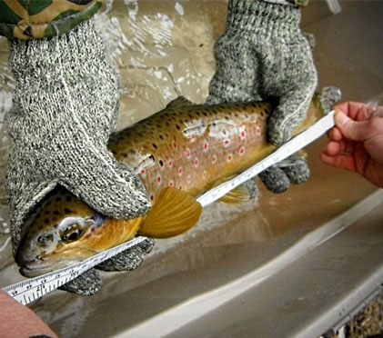
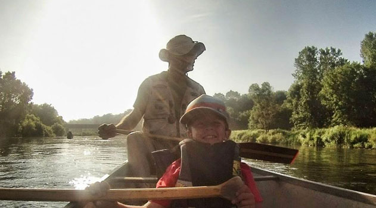
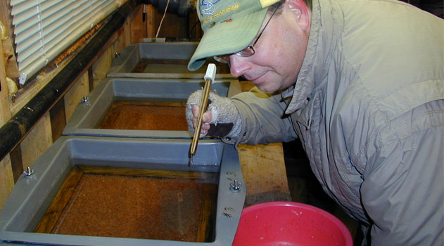
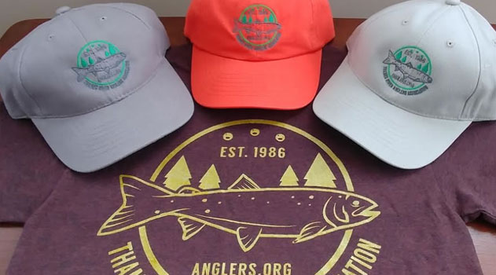
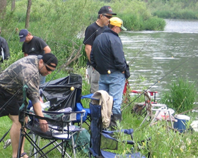
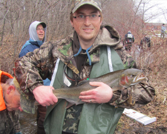
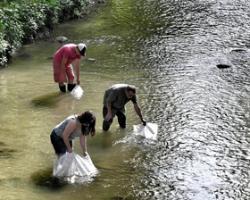
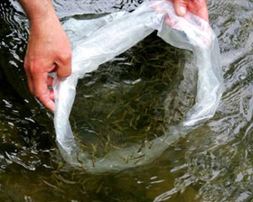
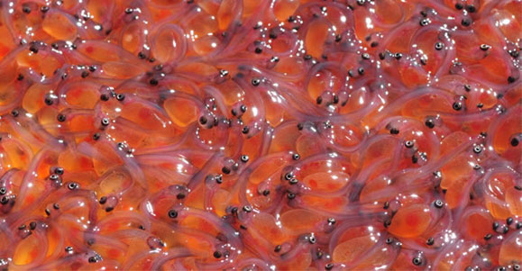
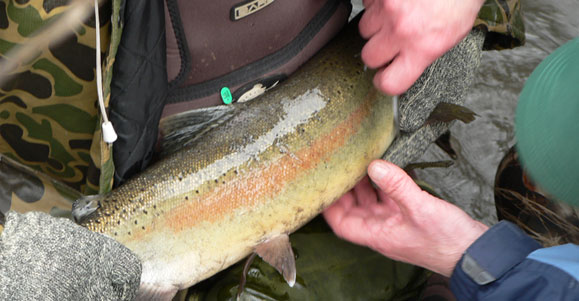

Thames River Anglers Association
Welcome Section
Call to Action
DONATE
& FUNDRAISE
Efforts are underway to raise the funds we need to continue many of the TRAA's most vital projects
THE TRAA
& MEMBERSHIP
Become a member and add another voice to help in our efforts in protecting our aquatic habitats for as little as $25/year
TAKE ACTION
& GET INVOLVED
From getting involved in our salmoid monitoring program to our Komoka Creek hydrolical study, make a difference today
About the TRAA

In the spring of 1986 the TRAA was formed by anglers concerned with the state of the fishery in the Thames River watershed, particularly the dwindling smallmouth bass population in the North Thames River.
The TRAA is not a fishing club, although most members are anglers and share fishing as a common interest. We are a "hands on" environmental group who likes to work at a grass roots level.
Latest News

TRAA Paddle & Fish
We've picked the date for this year's Paddle & Fish but have yet to decide on the route. So far, the route with the most support is the South Thames River east of London.

Rainbow Trout Eggs have Arrived!
This year's allotment of rainbow trout eggs were delivered to the trout hatchery April 16th. This means we now have both rainbows and browns in the hatchery together! It's a great time to visit as you can see the trout both in the egg and the fry stage.

TRAA Gear is now available!
T-shirts, at $15 each, are almost sold out! Meanwhile, all three editions of hats at $15 each, are available in three different colours : Clay Grey, Burnt Orange and Taupe. We also now have some nice stickers featuring the TRAA logo that you can display on your vehicle, boat, lunchbox or wherever you like. These are $2 each but you get one for joining the TRAA as a member or renewing an existing TRAA membership.
Get your TRAA Gear (makes a great Christmas gift!) at any TRAA event, such as this coming General Meeting.
News Navigation
Events Section
Upcoming Events

TRAA Fishing Evenings
We'll be heading out to try our luck every Thursday evening in July and August this summer. Keep an eye on your email for locations and dates as we organize them.

The Water Festival
We'll be heading out to try our luck every Thursday evening in July and August this summer. Keep an eye on your email for locations and dates as we organize them.

River Cleanup
We'll be heading out to try our luck every Thursday evening in July and August this summer. Keep an eye on your email for locations and dates as we organize them.

Brown Trout Release
We'll be heading out to try our luck every Thursday evening in July and August this summer. Keep an eye on your email for locations and dates as we organize them.
Projects Section
Current Projects Info
You'll find us right in the water clearing obstructions from streams, measuring returning salmonids & taking scale samples for DNA analysis, education through trout hatchery tours & stream walks, being a voice for the Thames River watershed & its inhabitants and the list goes on.

TRAA Trout Hatchery
The TRAA Trout Hatchery began in the mid-1980's as an outdoor upwelling box located adjacent to Komoka Creek on private property. While it was a simple and rustic affair, the TRAA enjoyed incredible egg hatching and fry survivability rate.

Salmonid Monitoring
Here's an overview of what happened over a few weekends in the Spring of 2012 when TRAA members & personnel from the Upper Thames River Conservation Authority (UTRCA) waded in for Year 3 of our 5-year